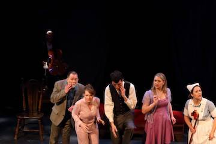

Production History
The Liminal Playhouse
2015 — 2016
September 3 — September 13, 2015
Christmas on Mars by Harry KondoleonDirected by Tony Prince
Bruno…Jon Patrick O'Brien
Audrey…Victoria Reibel
Nissim…Michael Roberts
Ingrid…Susan Linville
Scenic Designer…Eric Allgeier
Lighting Designer…Keith Kimmel
Costume Designer…Shane Estes
Sound Designer…Richard McGrew
Stage Manager…Jillian Cypress
Assistant Stage Manager…Katie Harris
March 24 — April 3, 2016
Melancholy Play by Sarah Ruhl Directed by Tad Chitwood
Original Score by Richard McGrew
Frank, a tailor…Neil Brewer
Tilly, a bank teller…Mera Kathryn Corlett
Lorenzo the Unfeeling, a psychiatrist…Tony Prince
Frances, a hairdresser…Laura Ellis
Joan, a British nurse…Teresa Willis
Julian, a cello player…Richard McGrew
Scenic Designer…Eric Allgeier
Lighting Designer…Keith Kimmel
Costume Designer…Shane Estes
Sound Designer…Richard McGrew
Stage Manager…Olivia Plath
Assistant Stage Manager…Maren Schikler
2016 — 2017
September 1 — September 11, 2016
The Nether by Jennifer HaleyDirected by Tony Prince
Sims/Papa…Rick Kautz
Morris…Vanessa Miller
Doyle…Paul Lenzi
Iris…Lila Schaffner
Woodnut…Neil Brewer
Scenic Designer…Eric Allgeier
Lighting Designer…Keith Kimmel
Costume Designer…Lindsay Chamberlin
Composer/Sound Designer…Richard McGrew
Stage Manager…Jillian Cypress
Assistant Stage Manager…Maren Schikler
November 10 — November 20, 2016
Venus in Fur by David IvesDirected by Tony Prince
Vanda…Victoria Reibel
Thomas…Gerry Rose
Scenic Designer…Eric Allgeier
Lighting Designer…Keith Kimmel
Costume Designer…Shane Estes
Sound Designer…Richard McGrew
Stage Manager…Richard McGrew
March 23 — April 2, 2017
Time Stands Still by Donald MarguliesDirected by Tony Prince
Sarah Goodwin…Heather Green
James Dodd…David Galloway
Richard Ehrlich…Brent Gettelfinger
Mandy Bloom…Katherine Martin
Scenic Designer…Wes Shofner
Lighting Designer…Theresa Bagan
Costume Designer…Shane Estes
Composer/Sound Designer…Richard McGrew
Stage Manager…Richard McGrew
Assistant Stage Manager…Grace Robinson
2017 — 2108
August 31 — September 10, 2017
Hir by Taylor MacDirected by Tony Prince
Isaac Connor…Neil Brewer
Paige Connor…Teresa Willis
Arnold Connor…Michael J. Drury
Max Connor…Megan Adair
Scenic Designer…Eric Allgeier
Lighting Designer…Keith Kimmel
Costume Designer…Shane Estes
Sound Designer…Richard McGrew
Stage Manager…Richard McGrew
Assistant Stage Manager…Grace Robinson
October 26 — November 5, 2017
Clybourne Park by Bruce NorrisDirected by Tony Prince
Bev/Kathy…Heather Green
Russ/Dan…Tony Prince
Francine/Lena…Michala Smith
Jim/Tom/Kenneth…David Galloway
Albert/Kenneth…Tyler Madden
Karl/Steve…Ryan Lash
Betsy/Lindsey…Katherine Martin
Scenic Designer…Eric Allgeier
Lighting Designer…Keith Kimmel
Costume Designer…Lindsay Chamberlin
Sound Designer…Richard McGrew
Stage Manager…Richard McGrew
Assistant Stage Manager…Grace Robinson
March 29 — April 8, 2018
Sex with Strangers by Laura EasonDirected by Tony Prince
Olivia…Lauren Argo
Ethan…Winston Blake
Scenic Designer…Bob Bush
Lighting Designer…Keith Kimmel
Composer/Sound Designer…Richard McGrew
Stage Manager…Richard McGrew
Assistant Stage Manager…Grace Robinson
May 24 — June 3, 2018
The Fastest Clock in the Universe by Philip RidleyDirected by Tony Prince
Cougar Glass…Remy Sisk
Captain Tock…Brian Hinds
Cheetah Bee…Laurene Scalf
Foxtrot Darling…Trystan Bright-Hadley
Sherbet Gravel…Megan Adair
Scenic Designer…Karl E. Anderson
Lighting Designer…Keith Kimmel
Costume Designer…Shane Estes
Sound Designer…Richard McGrew
Stage Manager…Richard McGrew
Assistant Stage Manager…Grace Robinson
2018 — 2019
August 30 — September 9, 2018
Mr. Universe by Jim GrimsleyDirected by Tony Prince
Katy Jume…Angela D. Williams
Vick…Michael Roberts
Judy…Eric Sharp
The Muscle Man…Anthony Franklin
Juel Laurie…Heidi Yost
The Saxophone Player…Brian Schaffner
A Police Woman…Erin Jones
Scenic Designer…Tony Prince
Lighting Designer…Keith Kimmel
Costume Designer…Shane Estes
Composer…Brian Schaffner
Sound Designer…Richard McGrew
Stage Manager…Richard McGrew
Assistant Stage Manager…Grace Robinson
October 25 — November 4, 2018
The Effect by Lucy PrebbleDirected by Kathi E. B. Ellis
Dr. Lorna James…Heather Green
Connie Hall…Megan Adair
Tristan Frey…Trystan Bright-Hadley
Dr. Toby Sealey…Scott Davis
Scenic Designer…Kevin D. Gawley
Lighting Designer…Keith Kimmel
Costume Designer…Tony Prince
Sound Designer…Richard McGrew
Fight Coordinator…Scott Davis
Stage Manager…Richard McGrew
Asst. Stage Manager/Medical Technician #1…Grace Robinson
Stage Assistant/Medical Technician #2…Erin Jones
March 28 — April 7, 2019
Smart People by Lydia R. DiamondDirected by Tony Prince
Valerie Johnston…Angela D. Williams
Jackson Moore…Louis Robert Thompson
Brian White…Ryan Lash
Ginny Yang…Bridget Kim
Scenic Designer…Kevin D. Gawley
Lighting Designer…Keith Kimmel
Costume Designer…Tony Prince
Sound Designer…Richard McGrew
Stage Manager…Richard McGrew
Assistant Stage Manager…Grace Robinson
May 30 — June 9, 2019
Edward Albee’s The GoatDirected by Neil Brewer
Martin…Tony Prince
Stevie…Susan Linville
Ross…Joey Arena
Billy…Matt Street
Scenic Designer…Charles A. Nasby
Lighting Designer…Keith Kimmel
Costume Designer…Tony Prince
Sound Designer…Richard McGrew
Production Technical Director/Assistant Scenic Designer…Lionel Nasby
Properties Designer/Scenic Artist…Megan Meyer
Special Prop Designer/Maker…Kathryn Spivey Deckard
Stage Manager…Richard McGrew
Assistant Stage Manager…Grace Robinson
2019
August 29— September 8, 2019
The Exceptionals by Bob ClymanDirected by Tony Prince
Claire…Mandi Elkins Hutchins
Gwen…Heather Green
Allie…Katie Graviss Bechtler
Tom…Eliot Zellers
Scenic Designer…Erkito Alprinnel
Lighting Designer…Jesse AlFord
Costume Designer…Tony Prince & Co.
Sound Designer…Richard McGrew
Stage Manager…Richard McGrew
Assistant Stage Manager…Treyton Blackburn
October 24 — November 3, 2019
Haunting Julia by Alan AyckbournDirected by Tony Prince
Joe…Tom Luce
Andy…Jason M. Jones
Ken…Brian West
Julia…Melinda Beck
Scenic Designer…Joey Arena
Lighting Designer…Jesse AlFord
Assistant Lighting Designer…Lindsay Krupski
Costume Coordinator…Tony Prince
Sound Designer…Richard McGrew
Stage Manager…Richard McGrew
Assistant Stage Manager…Treyton Blackburn
Scenic Build Assistant…Treyton Blackburn
Scenic Build Assistant…Jessica Tobey
2020 — 2021
August 19 — August 29, 2021
Punts by Sarah PageDirected by Tony Prince
Alastair…Brian Hinds
Julia…Sloan Malone
Antonia…Teresa Willis
Jack…Wes Yunker
Scenic Designer…Eric Allgeier
Lighting Designer…Lindsay Krupski
Costume Coordinator…Tony Prince
Sound Designer…Richard McGrew
Stage Manager…Richard McGrew
October 14 — October 24, 2021
The Houseguests by Harry KondoleonDirected by Tony Prince
Vera…Vanessa Hutchison
John…Keith McGill
Manny…Ryan Lash
Gale…Jay Padilla-Hayter
Scenic Designer…Scott Davis
Lighting Designer…Lindsay Krupski
Costume Coordinator…Tony Prince
Sound Designer…Richard McGrew
Assistant Scenic Designer…Heather Green
Stage Manager…Richard McGrew
Assistant Stage Manager…Emily Grimany
March 24 — April 3, 2022
How to Transcend a Happy Marriage by Sarah RuhlDirected by Tony Prince
George…Susan Linville
Paul…Gerry Rose
Jane…Heather Green
Michael…Scott Davis
Pip…Megan Adair
David…Neil Brewer
Freddie…Spencer Korcz
Jenna…Nick Schaffner
Scenic Designer…Karl Anderson
Lighting Designer…Lindsay Krupski
Costume Coordinator…Tony Prince
Sound Designer…Richard McGrew
Stage Manager…Richard McGrew
Assistant Stage Manager…Grace Robinson
May 26 — June 5, 2022
Edward Gant’s Amazing Feats of Loneliness by Anthony NeilsonDirected by Tony Prince
Edward Gant…Jason M. Jones
Madame Poulet…Lauren Argo
Jack Dearlove…Jacob Cooper
Nicholas Ludd…Spencer Korcz
Scenic Designer…Eric Allgeier
Lighting Designer…Gerald Kean
Costume Designer…Tony Prince and Cast
Properties Designer…Keith Kimmel
Sound Designer…Richard McGrew
Stage Manager…Richard McGrew